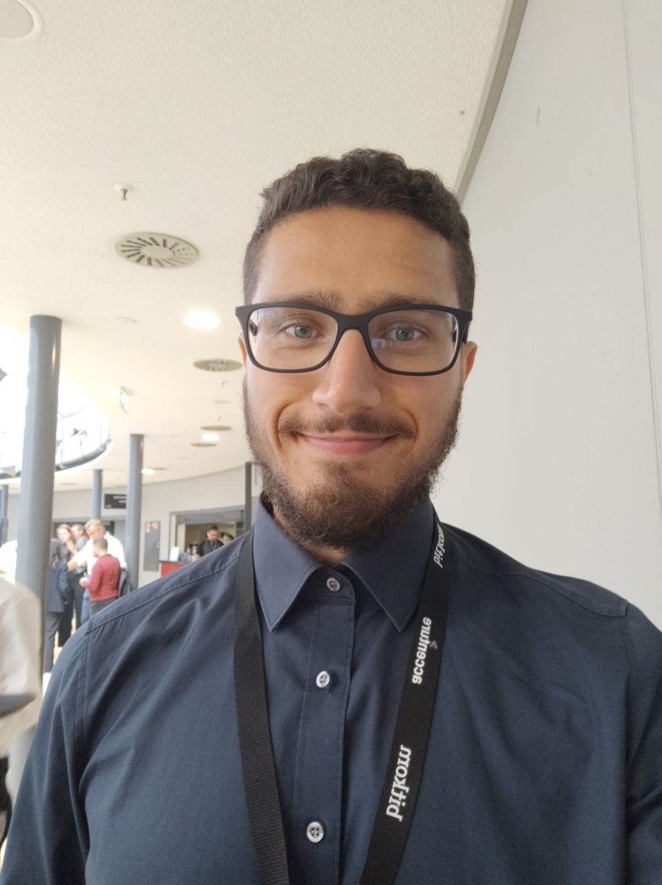

Hi, I’m Dawar, a second-year ELLIS PhD student at LMU Munich and the University of Copenhagen, co-supervised by Hinrich Schütze and Isabelle Augenstein. In my research, I work on training dynamics in large language models and active learning in the era of LLMs. When I’m not in the lab studying training dynamics in large language models, I’m working on training dynamics in humans with Early Birds Urban Movement or enjoying some beautiful music (https://open.spotify.com/playlist/6l81283sgPY8MWhT1QclW1?si=170f8bdd6d424401).

Uncovering how neural networks process and represent language, making AI systems more transparent and trustworthy through mechanistic interpretability.
Developing efficient methods for training models with minimal labeled data, reducing annotation costs while maintaining high performance.
Analyzing and understanding the behavior of large-scale language models, exploring their capabilities and limitations.
I'm working on writing up thoughts on mechanistic interpretability, active learning, and life as a PhD student. Stay tuned!
Interested in collaborating on interpretability or active learning? Let's push the boundaries of NLP together.